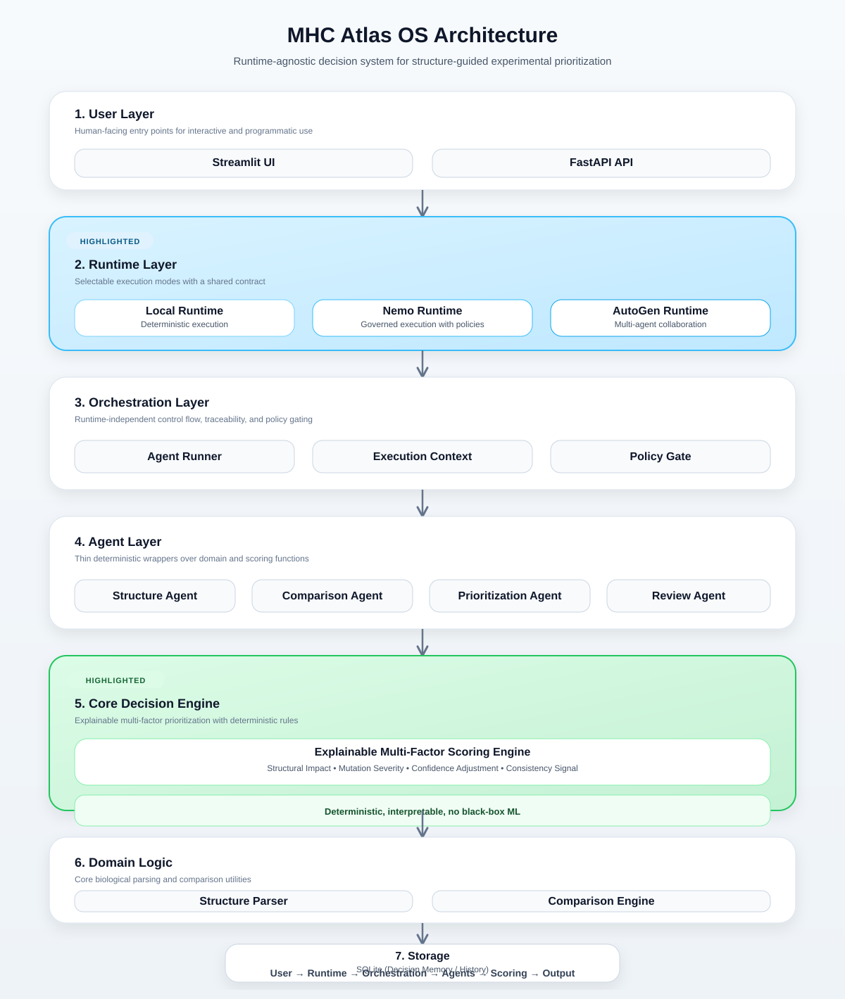

Structure parsing
Ingests PDB and mmCIF inputs, normalizes structure context, and prepares analysis-ready representations.
Open-source platform
Runtime-agnostic, explainable, structure-guided mutation prioritization
A policy-governed platform for structured experimental prioritization using AlphaFold-derived structure data, designed to produce readable signals and decision artifacts without leaning on black-box prediction.
Why this exists
Experimental teams often have structure files, mutation lists, and fragmented review notes, but not a governed way to translate that material into a prioritized queue. MHC Atlas OS focuses on the missing layer: explainable candidate ranking, policy-aware evaluation, and execution portability across deterministic and agent-capable runtimes.
What the platform does
The platform turns AlphaFold-derived inputs into interpretable prioritization outputs designed for review, comparison, and downstream experimental planning.
Ingests PDB and mmCIF inputs, normalizes structure context, and prepares analysis-ready representations.
Measures structural change between wild-type and variant states to expose deltas that matter for review.
Combines multiple explicit signal groups into an interpretable prioritization score rather than opaque inference.
Applies domain and execution rules before recommendation output, making decision logic inspectable and governable.
Produces decision summaries and report artifacts that can be reviewed by engineers, researchers, and collaborators.
Tracks history, rationale, and prior outputs so prioritization can be revisited with context rather than guesswork.
Architecture overview
MHC Atlas OS separates runtime concerns from domain logic so the same scoring, policy, and reporting core can operate across local execution, governed runtime contexts, and collaborative agent orchestration.

The architecture figure is expected at docs/architecture.svg.
Abstracts execution from implementation details so local, governed, or multi-agent modes can share the same core pipeline.
Coordinates task routing and collaboration while preserving explicit boundaries around who evaluates what.
Holds structure parsing, comparison, and prioritization logic in deterministic modules rather than runtime-specific glue.
Encodes decision rules, gates, warnings, and governance so output can be defended and re-evaluated consistently.
Generates reports, API responses, UI views, and decision memory artifacts that make the system operationally usable.
Runtime modes
Runtime abstraction is a product strength here, not a side detail. It keeps the platform portable while preserving deterministic domain logic and explainable output semantics.
Local Runtime
Direct pipeline execution for development, testing, reproducible evaluation, and low-friction local use.
Nemo Runtime
Introduces execution context, policy enforcement, warnings, traceability, and a more controlled decision path.
AutoGen Runtime
Supports agent-driven evaluation patterns where multiple task roles contribute to the final structured output.
Scoring model
The scoring system is designed to expose structured signals that help decide what to validate next. It does not claim to predict binding affinity or biological outcome directly.
Geometric change signals capture the degree and character of structural difference between wild-type and mutant states.
Residue-class transitions provide explicit mutation severity cues rather than hiding the rationale inside a learned model.
Model reliability indicators shape how strongly a result should influence prioritization and review attention.
Agreement across multiple indicators helps distinguish stable prioritization signals from noisy or ambiguous cases.
Design philosophy
Priority comes from explicit, reviewable signals rather than opaque prediction layers.
Every score should be legible enough to support discussion, skepticism, and revision.
Recommendations should pass through declared rules, not just internal heuristics.
The execution framework can change without forcing a rewrite of domain reasoning.
Core biology and scoring modules remain stable, testable, and portable across orchestration modes.
What this is not
MHC Atlas OS is intentionally positioned as a decision-support system for structured prioritization. That distinction matters for technical evaluation and for scientific credibility.
It does not claim direct affinity prediction or biological truth. It emits structured prioritization signals for validation planning.
Ranking logic is explicit, multi-factor, and policy-aware rather than buried inside a fixed heuristic stack.
Runtime abstraction is built into the architecture so the platform is not trapped inside one orchestration choice.
The system includes decision logic, reporting, and memory instead of stopping at inspection or visualization.
The platform is organized around reusable workflows, policy gates, and artifacts that support repeatable review.
Workflow / execution flow
Provide wild-type and mutant structure data with the candidate context that frames the evaluation task.
Choose local, governed, or multi-agent execution based on the level of control, traceability, and orchestration required.
Dispatch through the appropriate orchestration layer while keeping the domain core stable.
Parse files, compare state changes, and assemble the raw signals required for scoring.
Integrate structural, biochemical, confidence, and consistency signals into a readable prioritization output.
Gate, warn, or annotate results according to declared rules before anything is presented as a decision artifact.
Produce reports, API/UI outputs, and saved decision history for review, comparison, and follow-on work.
Artifacts / resources
Source tree, issues, releases, and implementation details.
Site deployment notes and homepage maintenance instructions.
Fastest path to a demo workflow and first execution.
Environment and package installation options.
Command-line entry points and usage patterns.
Walkthroughs and evaluation scenarios.
Structured evaluation path for collaborative review.
Versioned changes, maturity signals, and evolution history.
Project status / roadmap
Core runtime, orchestration, scoring, reporting, and storage layers are already visible as distinct system boundaries.
Scoring and decision outputs are positioned around readable rationale instead of opaque predictive claims.
Future work can expand runtime integrations, plugin surfaces, and scoring policy modules without collapsing the core architecture.
Contact / contribution
Contributions, evaluation feedback, and architecture discussion are best routed through the repository. Replace the placeholder contact below if you want a direct collaborator or diligence contact.
Licensed under MIT where applicable in the repository.